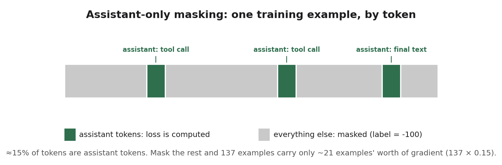
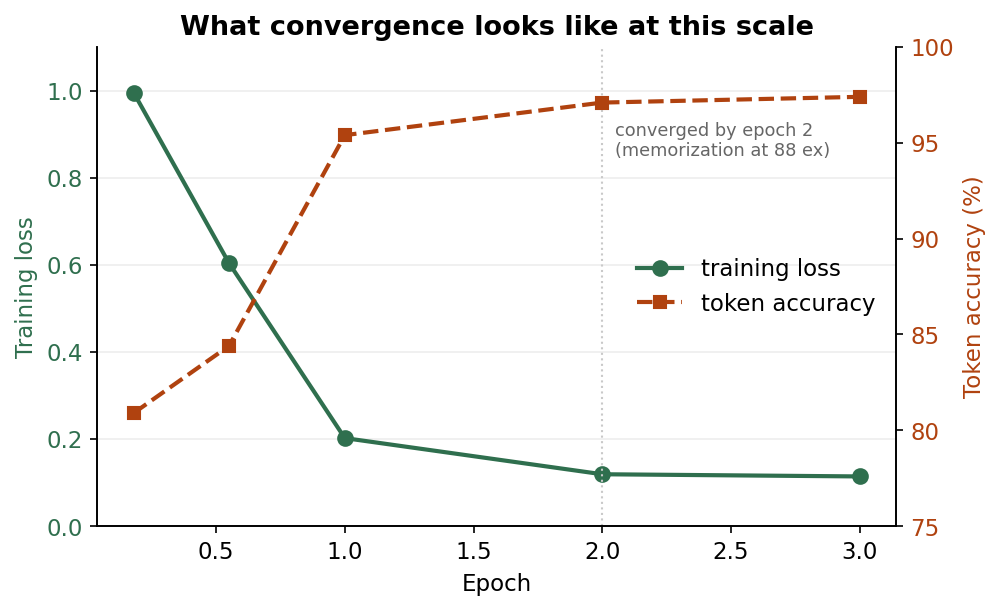
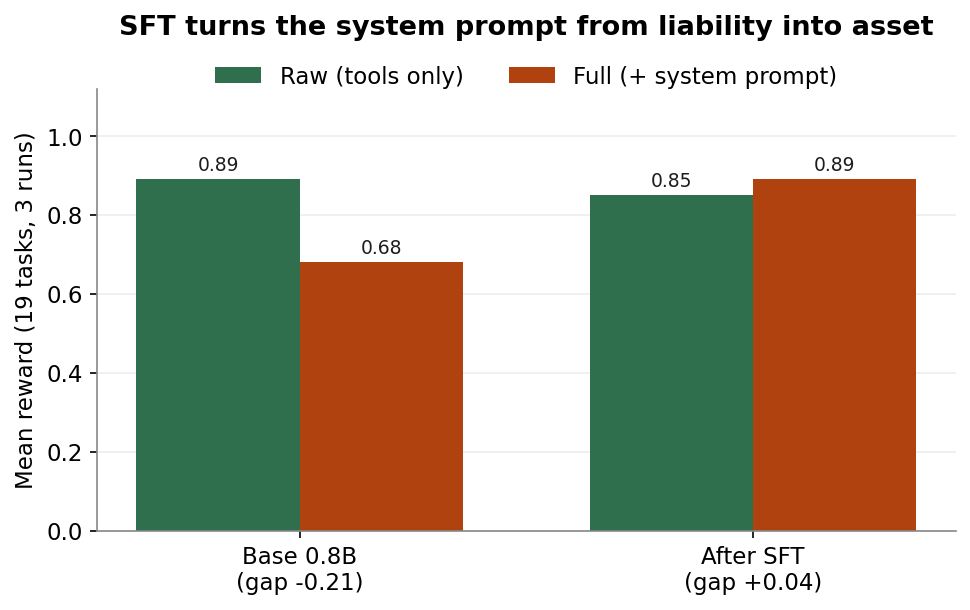
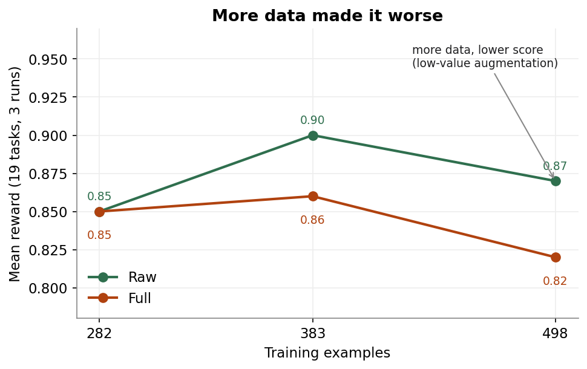

SFT
Teaching a 0.8B model the protocol
The baseline run ended on a clear problem. A reasonable system prompt, the kind that helps a frontier model, dropped the raw 0.8B from 0.89 to 0.68. The behavioral rules meant to guide it instead made it loop and second-guess itself, and two tasks sat at a flat zero: writing to an absolute path, and the read-then-edit bug fix.
The plan, set at baseline, was to stop handing the model the protocol as instructions and bake it into the weights instead. The harness post built the two things that takes: a harness that scores the agentic loop, and ~140 validated traces with no system prompt in them. Training on them worked, and then surprised me twice.
What SFT actually is
Supervised fine-tuning is the plainest tool in the post-training box. You keep doing the same next-token training the base model was built with, but on a curated set of (prompt, ideal response) pairs, so the behavior in those responses becomes the model’s default. Show it a few hundred examples of “clean path, two turns, stop,” and clean-path-two-turns-stop is what it reaches for.
It’s the right first move here for a specific reason. The early failures are protocol and format problems, and those are deterministically right or wrong: the path is mangled or it isn’t, the model reads before editing or it doesn’t, it stops or it loops. That is exactly the kind of thing a supervised example fixes, because there’s one correct demonstration to imitate. What SFT can’t easily do is teach preference, ranking two answers that are both valid but one is better. That shows up later as the bug fix that’s correct only sometimes, and it’s why the next post is DPO.
How it works, mechanically
A full fine-tune of all 0.8B parameters (no LoRA), ordinary cross-entropy on the target tokens, learning rate 2e-5 on a cosine schedule, three epochs. On the RTX 5070 Ti that’s about 8 to 30 minutes depending on dataset size, peaking around 10 GB of VRAM. Nothing exotic.
The one detail that matters more than it looks is what counts as a target token. A training example is a whole conversation: user turn, the assistant’s tool calls, the tool results coming back, more assistant turns. But the model only ever generates the assistant parts. The user turns and tool results are context it reads, never something it should learn to produce. So loss should be computed on assistant tokens only, with everything else masked out (set to the ignore label, -100). This is the standard “train on completions only” setup.

-100. In an agentic trace, that leaves only a small fraction of tokens.Here’s the catch that bit me later: in an agentic trace, the assistant tokens are a small fraction of the example. Most of the length is the prompt and the tool outputs. Masking is correct, but it throws away most of the tokens, and at this dataset size that turns out to matter.
Training itself is fast and clean. Loss falls off a cliff and token accuracy climbs into the high 90s by the second epoch.

At 88 examples that fast plateau is partly memorization, and I’d worry more if the eval weren’t held-out: the harness tasks aren’t in the training set, so the gains below are generalization, not recall.
The result: the gap reverses

The headline is the right-hand pair. On the base model the system prompt was a 21-point liability. After SFT it’s a 4-point asset. The target, the model running with the full system prompt, went from full0.68 →0.89. The model stopped fighting the prompt and started cooperating with it, because the prompt now reinforces behaviors it already knows.
The two zeros are gone. Absolute paths went from 0.00 to 1.00, fixed outright. The read-then-edit bug fix went from 0.00 to 0.60, real progress but not yet reliable (I come back for it with DPO and RL in later posts).
One honest cost: in the Raw condition the score slipped from 0.89 to 0.85. Without the system prompt to lean on, the model occasionally falls back to old instincts, like skipping a Read before answering. Those same tasks fully recover under Full, so it isn’t forgetting, it’s sensitivity to context. And since Full is the condition that counts, this is the trade I want.
Surprise one: the masking fix made it worse first
A bug hid in the first run. Qwen3.5’s chat template was missing the tags my trainer needs to find the assistant spans, so masking silently did nothing and the first model trained on everything, including the user turns and tool outputs it never has to generate. I patched the template, turned proper masking on, and expected a clean win.
It got worse. Masking throws away about 85% of the tokens in each example, so my 137 examples suddenly carried only about 21 examples’ worth of gradient signal (the green slivers in the figure above), and the model undertrained. The fix wasn’t to turn masking off, it was to feed it more data: at ~380 examples the focused-gradient model finally beat the sloppy full-token one. The literature has the matching nuance, that training on the prompt tokens isn’t strictly worse and can help when completions are short, which is exactly the corner I’d wandered into. On a model this small, the margin between “enough signal” and “not enough” is thin, and you can cross it by accident.
Surprise two: more data made it worse

With masking working, I pushed on dataset size, and the curve bent the wrong way. The 498-example model scored below the 383-example one, in both conditions. More data, lower score.
The reason is composition, not count. The examples I added to get from 383 to 498 were cheap augmentations of the Tier B code-generation prompts from the harness post: swap “Create” for “Make” or “Generate” on a one-shot Write task. That adds rows without adding behavior. Worse, it tilts the mix away from the Tier A agentic traces (multi-tool chains, error recovery, stopping) that carry the actual signal, so it dilutes the very thing I’m training. The augmentations that did help were on agentic examples, where a new filename or rephrasing is genuine variety.
The lesson I’ll carry through the rest of the series: for a small model, what the data teaches matters more than how much of it there is. An example that doesn’t show the model something new isn’t free, it just takes the place of one that would.
Where this leaves the model
The keeper is the selectively-augmented run: about 350 examples, full0.89, chosen over a slightly higher Raw run because the model ultimately runs with the system prompt. Correctness and the agentic protocol are now in the weights. The system prompt is an asset. Absolute paths are solved.
What’s left is quality. The model now does the right things, but on the harder coding tasks it still writes the merely-okay version, and the bug fix is correct only six times in ten. SFT teaches “what good looks like” from examples; it can’t easily teach “this answer is better than that one.” That’s a preference problem, which is the next post: DPO.